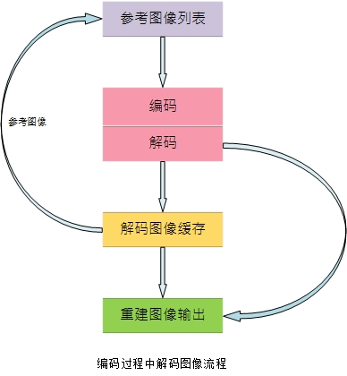
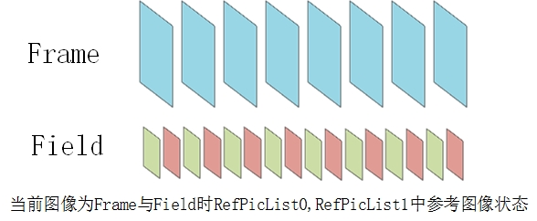
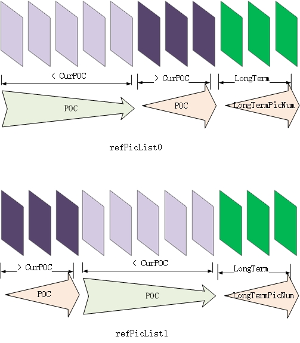
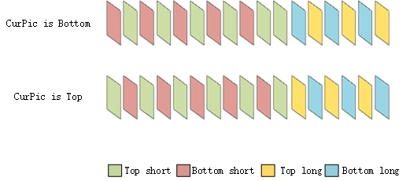
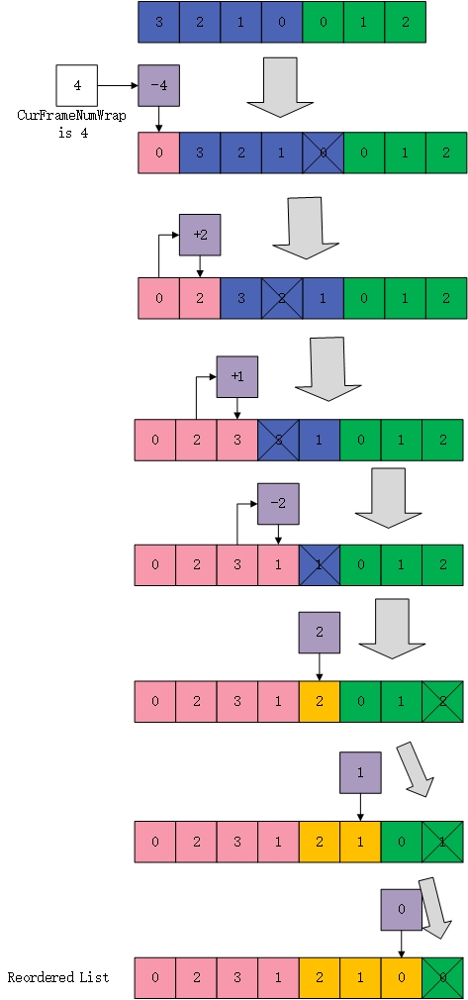

正文
- h.264的POC计算
- 指数哥伦布编码
- h.264加权预测
- h.264码率控制
- h.264直接预测
- h.264 FMO
- h.264参考图像列表、解码图像缓存
- h.264 mvp求解过程
- UMHexagonS搜索过程
- h.264全搜索以及快速全搜索算法
- h.264 率失真优化
- EPZS搜索过程
- Intra Chroma Prediction
- Intra Luma Prediction
- H.264 Transform
- H.264 Quantization
- Quantization Method
- h.264 Mode Decision
- h.264 Bi-Predictive Motion Search
- h.264语法结构分析
- h.264宏块与子宏块类型
- h.264 scanning process for transform coefficients
- CAVLC
- CABAC
- 算术编码JM实现
- h.264并行解码算法分析
- h.264 去块滤波
- h.264并行解码算法2D-Wave实现（基于多核非共享内存系统）
- h.264并行解码算法2D-Wave实现（基于多核共享内存系统）
- h.264并行解码算法3D-Wave实现（基于多核共享内存系统）
- h.264并行熵解码
- CABAC总结与补充讨论
- ffmpeg h264并行解码
- ffmpeg h.264解码所用的主要缓冲区介绍

1.参考图像列表（reference picture list）
一般来说，h.264会把需要编码的图像分为三种类型：I、P、B，其中的B、P类型的图像由于采用了帧间编码的这种编码方式，而帧间编码又是以参考图像为基础进行的，因此需要有个参考图像列表来管理之前生成的参考图像，方便用于对当前图像进行编码。
2.解码图像缓存（decoded picture buffer）
随着图像编码的进行，（解码阶段）会不断有新的图像生成（重建图像），已解码图像会被放到解码图像缓存区中（或直接输出，这个在下面DPB讲）。但是由于内存大小与效率的限制，不可能一直保存参考图像而不丢弃，所以会有个对解码图像缓存这块内存区的管理策略。

参考图像列表
1. 来源
参考图像列表中的参考图像来自于解码图像缓存（DPB）中的已解码参考图像，DPB中可能包含参考以及非参考图像，参考图像列表把DPB中的参考图像整合成列表（数组）的形式，便于后续的排序等操作
2. 结构
组成
如标准8.4.1.2.3的注1所说：
- 如果当前宏块是场宏块（mb_field），则refIdxL0和refIdxL1指的是一系列的场；
- 如果当前宏块是帧宏块（!mb_field），则refIdxL0和refIdxL1指的是一系列的帧或者互补场对
但是参考图像列表的排列方式是不可能根据每个宏块的帧场时时刻刻做出改变，参考图像列表当前图像编码前就通过图像的帧场属性确定下来了:
- 如果当前图像为帧（structure == Frame），参考图像列表中存放的是一系列的帧或者互补场对
- 如果当前图像为场（structure == Field），参考图像列表中存放的是一系列的场
这就造成了当采用的是mbaff，且当前宏块为mb_field的时候参考图像列表的帧场不匹配，标准中的解决方法是：先得到参考帧RefPicListX[ refIdxLX / 2 ]，然后选择该参考帧中对应的场进行编码（8.4.2.1），而JM则采用了一种巧妙的方法：如果当前图像是mbaff，则专门构造另外存放场参考图像列表RefPicListX（X = 2,3,4,5）方便进行提取参考场（JM中的list_offset就是用于决定X的值）。
长度
参考图像列表的最大长度取决于当前宏块是以何种方式进行编码
如果当前宏块为帧宏块（纯帧图像 或 mbaff && !mb_field），默认情况下参考图像列表的长度为16，也可以通过num_ref_idx_l0_active_minus1指定最大长度为（num_ref_idx_l0_active_minus1 + 1）
如果当前宏块为场宏块（场图像 或 mbaff && mb_field），默认情况下参考图像列表长度为32，也可以通过num_ref_idx_l0_active_minus1指定长度为（2 * num_ref_idx_l0_active_minus1 + 2）
——标准7.4.5.2
参考图像列表中的条目数目可能存在大于，或小于等于最大长度的情况：如果条目数大于最大长度，将删除最大长度之外位置的条目
如果条目数小于最大长度，将把空余的条目设置为“非参考图像”
——标准8.2.4.2
3. 排序
参考图像分为短期参考图像（short-term reference）与长期参考图像（long-term reference），在某一个时间点上，参考图像只能是这两种的其中一种（非短即长）。参考图像列表分为两个部分：短期参考部分，长期参考部分。短期参考部分排在列表前头，长期排在后面。
P帧排序
一般来说，距离当前图像最近的参考图像会被当前图像用作最多的参考，距离越远则参考得越少，短期参考图像列表就是依据这种规律来进行排序的。
短期参考图像的序号由FrameNumWrap进行标记，以GOP为一个周期，GOP的第一帧的FrameNumWrap为0，后面持续递增，到当前帧是FrameNumWrap为最大，因此FrameNumWrap越大代表距离当前图像越近，因此将参考帧以FrameNumWrap降序方式放在refPicList0的起始位置
——标准8.2.4.1
也可以参考h.264的POC计算
长期参考图像的序号由LongTermPicNum进行标记，以升序的方式进行排序，（LongTermPicNum由MMCO分配）
B帧排序
B帧的参考帧排列方式与P帧并不完全相同，B帧的短期参考帧是以POC进行排序，其中有前向参考列表refPicList0与后向参考列表refPicList1
- 当参考帧的POC小于当前图像的POC时，将参考帧以POC降序方式放在refPicList0的起始位置上。然后剩余的短期参考图像按照POC升序的方式附加到refPicList0
- 当参考帧的POC大于当前图像的POC时，将参考帧以POC升序方式放在refPicList1的起始位置上。然后剩余的短期参考图像按照POC降序的方式附加到refPicList1
——标准8.2.4.2.3
长期参考图像的序号由LongTermPicNum进行标记，以升序的方式进行排序，分别放进refPicList0与refPicList1中（LongTermPicNum由MMCO分配）
注：一个未配对的场不能用于帧间预测，即表明如果当前为帧，那么其参考帧不可能为一个单一的场
场的处理
无论是P还是B，如果当前图像是场编码时，需要对上述的步骤做进一步处理，即把列表内的帧分为两个场，从与当前场具有相同奇偶性的场（如果存在）开始，对参考场进行排序
- 如果当前场为Top_field，则列表中为|top|bottom|top|bottom..
- 如果当前场为Bottom_field，则列表中为|bottom|top|bottom|top..
- 如果其中某一帧缺少了某个场作为参考场，那么将忽略该缺少的场
——标准8.2.4.2.5
4. 参考图像列表重排序
在某些特殊情况下会需要把已经得到的参考图像列表重新排序，可以参考JM18.6的HierarchicalCoding，下面主要演示重排序过程：
- 当中的紫灰色格子为重排序操作，对于短期参考图像，重拍序有符号与操作数，对于长期参考图像，直接通过操作数指定图像；
- 后面还没进行到的列表项会被后移；
- 划掉的格子为重复的图像，会被消除，如果被消除项后面还有其他项，后面的项会被前移填补前面被消除项的空格；
- 重排序的初始操作是以当前图像的FrameNumWrap为基础。
——标准8.2.4.3
解码图像缓存
1.参考图像标记过程
在当前图像解码过后、插入DPB之前，会进行标记过程Decoded reference picture marking process，对先前已经解码并存在于DPB中的图像进行标记。该过程会对DPB中已经存在的图像（当然不包括当前图像）重新标记。标记过程有两种情况：
1.当前图像为IDR
如果指定了no_output_of_prior_pics_flag，表示DPB中所有的图像不进行输出，但是需要从DPB中移除
否则，从DPB中移除所有图像并输出到磁盘
2.当前图像不为IDR，且指定了adaptive_ref_pic_buffering_flag
表明需要对当前DPB进行重新标记，其中有6种标记方法，即内存管理控制操作（memory management control operation）
其中
- 短期参考图像序号为picNumX = CurrPicNum − ( difference_of_pic_nums_minus1 + 1 )
- 长期参考图像序号为LongTermPicNum = long_term_pic_num（也就是说长期参考图像可以从上表3,6项指定）
注：把图像作为参考或者非参考，对于参考场对来说，两个场必须共同作为参考图像或者非参考图像，也就是说当你想为一个场标记的时候，其实标准需要你对整个帧（两场）都进行标记
——标准8.2.5
2.DPB
DPB标记完成后，需要把当前图像插入DPB（如果需要）。
DPB结构
解码图像缓存（DPB）是真正管理与存储图像数据的地方，凡是已经解码的图像，如果需要存储在内存中，都需要通过DPB进行管理，基本操作包括对解码图像的插入与删除。在JM中有个dpb结构体表示解码图像缓存。
//! Decoded Picture Buffer
typedef struct decoded_picture_buffer
{
FrameStore **fs; //参考图像列表，该指针主要用于管理一帧图像，其中包括一个帧与两个场，其成员frame管理帧，top_field与bottom_field会用于管理场
FrameStore **fs_ref; //短期参考图像列表(当然，在这里是未经排序的)
FrameStore **fs_ltref; //长期参考图像列表
unsigned size; //dpb最大容量，能容得下多少帧,最大不超过16
unsigned used_size; //dpb实际存了多少帧,以帧为单位,如果只有其中一场,也被看做一帧
unsigned ref_frames_in_buffer;//chj fs中用做short-term reference的帧的个数，短期参考帧,遇到下个I(IDR)会清空缓存
unsigned ltref_frames_in_buffer; //长期参考帧个数
int last_output_poc; //上一个从dpb输出的poc序号
int max_long_term_pic_idx; //最大长期参考帧个数
int init_done;//是否已经初始化dpb
FrameStore *last_picture;//如果当前帧为场编码，则用于存其中一场，等待下一场编码完成后合并
} DecodedPictureBuffer;
DPB最大长度
当然DPB的大小也是有限制的，标准附件A就对DPB大小做出了限定：MaxDpbSize = Min( 1024 * MaxDPB / ( PicWidthInMbs * FrameHeightInMbs * 384 ), 16 )
——标准附件A.3.2
DPB管理策略
另外DPB对解码图像的存储有个策略：更倾向于存储对后面编码有用的图像（也就是参考图像）。
虽然说DPB中也可以存储非参考图像，在DPB没满的时候，会无差别地把参考图像与非参考图像一并插入DPB中；
但是一旦DPB满了之后：
如果新重建的图像为参考图像，该参考图像需要插入DPB
如果DPB中没有非参考图像，会按照滑动窗口模式把DPB序号最小的参考图像移除； （1）
如果DPB中存在非参考图像，会把DPB中已经输出到磁盘的非参考图像移除； （2）
如果新重建的图像为非参考图像如果DPB中不存在比当前图像POC更小的非参考图像，当前非参考图像会被直接输出到磁盘，而不插入DPB； （3）
如果DPB中存在比当前图像POC更小的非参考图像，会把DPB中POC最小的参考图像移除，插入当前非参考图像；（4）
可以对应下面代码中的四段：
void store_picture_in_dpb(StorablePicture* p)
{
…
// sliding window, if necessary （1）
if ((!img->currentPicture->idr_flag)&&(p->used_for_reference && (!img->adaptive_ref_pic_buffering_flag)))
{
sliding_window_memory_management(p);
}// first try to remove unused frames （2）
if (dpb.used_size==dpb.size)
{
remove_unused_frame_from_dpb();
}// then output frames until one can be removed
while (dpb.used_size==dpb.size)
{
// non-reference frames may be output directly（3）
if (!p->used_for_reference)
{
get_smallest_poc(&poc, &pos);
if ((-1==pos) || (p->poc < poc))
{
direct_output(p, p_dec);
return;
}
}
// flush a frame（4）
output_one_frame_from_dpb();
}
insert_picture_in_dpb(dpb.fs[dpb.used_size],p);
…
}
欧长坤 © 2016-2025 版权所有， 采用知识共享署名-非商业性使用-禁止演绎 4.0 国际许可协议许可，代码使用 MIT 协议开源。
如果你认为本书对你起到了帮助，可以资助作者。